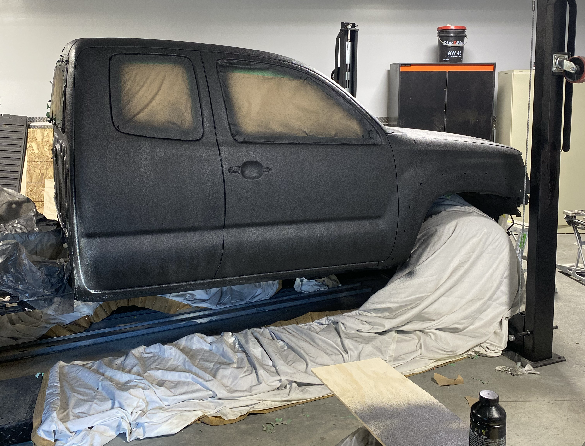
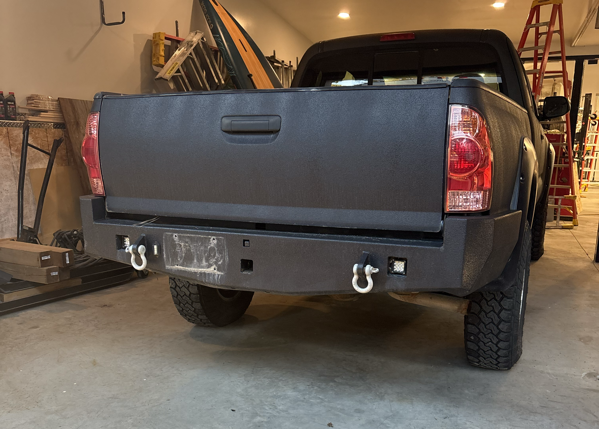
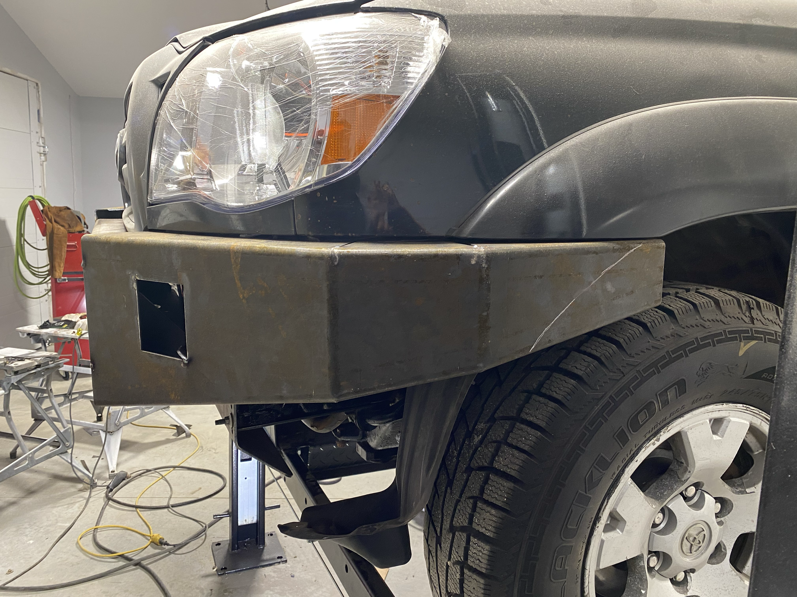

Custom Toyota Tacoma
Overview
My dad and I worked together on a project car, a 2006 Toyota Tacoma. The truck was not road legal when we first got it, and over the next two years we worked on it to fix it up, and adding customizations. Doing this taught me a lot of practical skills.

Broken Parts
- - Broken front and rear bumpers
- - Worn-out universal joints
- - Leaking head gasket
- - Broken O2 sensors
- - Rusted out frame
- - Four-wheel drive didn't work
- - Engine was running poorly
- - Paint was rock chipped
- - CV shafts were broken

Customizations
On top of fixing the broken parts, we also added customizations such as a lift kit to the front and wheel axels, a new stereo with back-up camemera, custom front and rear bumpers with a built in winch, and a new paint job.
Hard Skills Learned
While working on the truck and fixing it up, I learned how to weld, how to design and manufactor custom steel parts. I also learned how to troubleshoot and fix both mechanical, and electrical problems. I also learned how to use a variety of tools, and how to problem solve using the equipement available to me.
